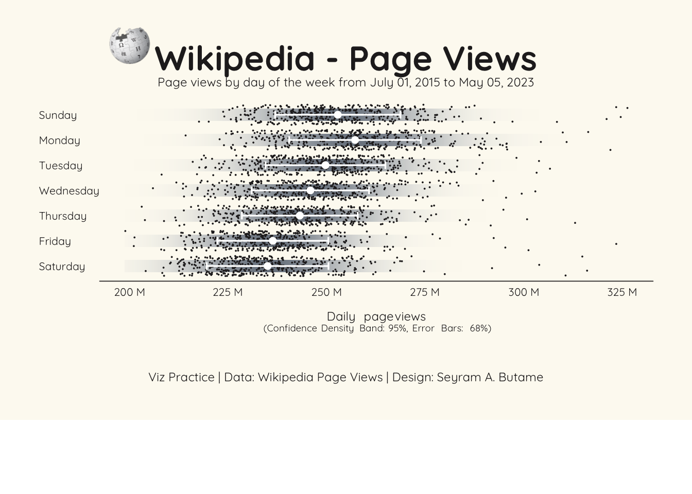

Wikipedia Users
Relevant Library
tidyverse- Family of data managmement and wrangling packages (e.g.,dplyr).1showtext- This package helps using additional fonts More Easily in R Graphs.2janitor- This package offers simple functions for examining and cleaning dirty data.3ungeviz- This package is meant to provide helpful add-on functionality for ggplot2 to visualize uncertainty.4ggtext- This package provides simple Markdown and HTML rendering for ggplot2.5magick- allows for advananced graphcis and image processing (I use this to import images (i.e., png, or svg)).6cowplot- Allows for plot annotations, and even adding images to ggplot generated charts.7
Data
The data for this project is sourced from the page views of Wikipedia.org (i.e., the page view information from Wikipedia over the years).
Source: - Wikipedia - Statistics
Navigate to the Site traffic statistics link. Then set the dates you are interested in viewing, and download the relevant data file in the format of your choice.
data <- read_csv("data/siteviews-20150701-20230503.csv") %>%
as_tibble()
df1 <- data %>%
clean_names() %>%
rename(pgviews = en_wikipedia_org) %>%
mutate(date = ymd(date)) %>%
mutate(year = year(date),
month = month(date, label = TRUE, abbr = FALSE),
monthabb = month(date, label = TRUE, abbr = TRUE),
day = wday(date, label = TRUE, abbr = FALSE))Summary Stats
df1sum <- df1 %>%
group_by(day) %>%
summarise(sd = sd(pgviews), #Standard Deviation
moe = sd*1.96, #Margin of Error
pgviews = mean(pgviews))
df1sum# A tibble: 7 × 4
day sd moe pgviews
<ord> <dbl> <dbl> <dbl>
1 Sunday 15887141. 31138796. 256689896.
2 Monday 16709005. 32749649. 261065739.
3 Tuesday 15183936. 29760514. 253569732.
4 Wednesday 14871117. 29147390. 249749150.
5 Thursday 14676533. 28766006. 247067908.
6 Friday 14065987. 27569334. 240223765.
7 Saturday 15423140. 30229355. 238905330.Specify Fonts
I have become fond of the Quicksand font of late. It is a san-serif font, that feels easy on the eyes, my eyes at least. Additionally, it doesn’t seem too playful.
font_add_google(name = "Quicksand", family = "Quicksand")
font <- "Quicksand"Specify Colors
I have taken a liking to the Tablea colorblind palette.
color1 <- "#dee2e6" #To be used for parts of the plot.
color2 <- "#252324" #To be used for the Axis, the points in the scatter plot, and the textWikipedia Logo
logo <- image_read_svg("img/wikipedialogo.svg")Create Scatter Plot
Got to make use of the ungeviz package. I am not familiar with that package, but Hart employed it to great effect and the ggplot code they developed made the packages use very clear to me.
p1 <- df1sum %>%
ggplot(aes(x = pgviews, y = day))
p1 <- p1 + stat_confidence_density(aes(moe = moe, fill = after_stat(ndensity)), height = 0.5)
p1 <- p1 + geom_point(data = df1, position = position_jitter(width = 0.05), size = 0.01, color = color2)
p1 <- p1 + geom_errorbarh(aes(xmin = pgviews - sd, xmax = pgviews + sd), height = 0.3, linewidth = 0.6, color = "#ffffff")
p1 <- p1 + geom_point(size = 2, color = "#ffffff")
p1 <- p1 + scale_fill_gradient(low = "#a3acb9", high = "#7b848f")
p1 <- p1 + scale_y_discrete(limits = rev)
p1 <- p1 + scale_x_continuous(breaks = seq(200000000, 325000000, by = 25000000), labels = scales::unit_format(unit = "M", scale = 1e-6))
p1 <- p1 + theme_void()
p1 <- p1 + theme(
plot.title = element_text(family = font, size = 25, hjust = 0.5, color = color2, face = "bold"),
plot.title.position = "plot",
plot.subtitle = element_text(family = font, size = 9, hjust = 0.5, color = color2, margin = margin(t = 5, b = 10)),
plot.caption.position = "plot",
plot.caption = element_text(size = 9, family = font, color = color2, hjust = 0.5, margin = margin(t = 30)),
legend.position = "none",
axis.text = element_text(size = 8, family = font, color = color2, hjust = 0, margin = margin(t = 5)),
axis.title.y = element_blank(),
axis.title.x = element_markdown(size = 9, family = font, color = color2, margin = margin(t = 10)),
axis.line.x = element_line(color = color2, linewidth = 0.3),
plot.margin = unit(c(1, 1, 1, 1), "cm"),
plot.background = element_rect(color = NA, fill = "#fdfaf1"))
p1 <- p1 + labs(title = "Wikipedia - Page Views",
subtitle = "Page views by day of the week from July 01, 2015 to May 05, 2023",
x = "Daily page views<br><span style='font-size:7pt'>(Confidence Density Band: 95%, Error Bars: 68%)</span>",
caption = "Viz Practice | Data: Wikipedia Page Views | Design: Seyram A. Butame")
ggdraw() + draw_plot(p1, x = 0, y = 0.15, width = 1, height = 0.85) + draw_image(logo,x = 0.15, y = 0.87, width = 0.075, height = 0.075)
What we see in the chart above are bands of data points for each day of the week. A band denotes the confidence interval of that day’s data, (i.e., the range of data in which we are 95% confident that the true mean lies). Layered on top of that are error bars, denoting the breadth of the data lying within +/-1 of the calculated standard deviation.
What we end up with is a chart that shows, daily page views for Wikipedia.org.But beyond that, it provides confidence bands for each day that highlight where the page views are most concentrated
This work was inspired and guided with the code of Ryan Hart (Github: curatedmess)1